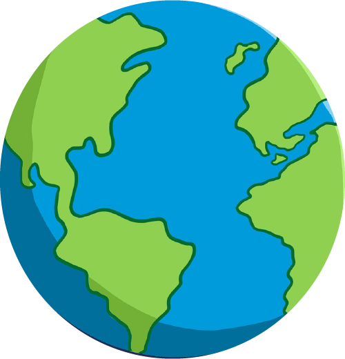
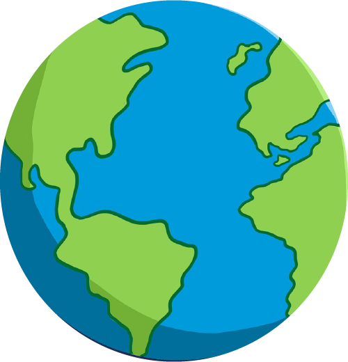

Bienvenue dans l'espace
Un petit ovni décida un jour de quitter la terre pour aller explorer le cosmos.

- animation rotation
- scrollTrigger
- trigger=chapitre1
- scrub=true
- pin=true
Un ami
Peu de temps après avoir quitter la terre, le petit ovni aperçu au loin un autre voyageur.

- animation rotation
- animation motionPath
- scrollTrigger
- trigger=chapitre2
- scrub=true
- pin=true
Encore des planètes!
L'ovni continuait de voler dans l'espace mais tout ce qu'il voyait était des planètes.

- animation rotation
- animation spritesheet
- scrollTrigger
- trigger=chapitre3
- scrub=true
- pin=true
Les baleines de l'espace
L'ovni n'en croyait pas ces yeux. Il n'avait jamais entendu parler de baleine spacial jusqu'à maintenant.

- animation toggleActions avec repeat
- scrollTrigger
- trigger=Chapitre4
- toggleActions
- play
- pause
- resume
- pause
- pin=true
Gare à la tête
Des astéroides approchait dangereusement du vaisseau de l'ovni et ce dernier les esquiva de justesse.
- animation toggleActions
- animation translation et rotation
- scrollTrigger
- trigger=chapitre5
- toggleActions
- play
- pause
- reverse
- pause
- pin=true
Planète détruite
Qu'est-ce qui est arriver à cette planète se demanda l'ovni. Elle semble s'être séparer en morceau très bien découper.


- animation déconstruction
- scrollTrigger
- trigger=chapitre6
- scrub=true
- pin=true
Pluie de météorites
D'autre astéroides plus gros que ceux de tout à l'heure arrive à pleine vitesse vers le vaisseau de l'ovni. Ce dernier réussit à passer au travers de justesse.
- animation Parallax
- scrollTrigger
- trigger=chapitre7
- scrub=true
- pin=true
"$%?%&*?%&/%&
Mais qui est-ce? se demanda l'ovni. La créature semblait hostile. En un clin d'oeil elle dévora le vaisseau du petit ovni et ce dernier fût englouti avec le vaisseau.

- animation translation et opacité
- scrollTrigger
- trigger=chapitre2
- scrub=true
- pin=true